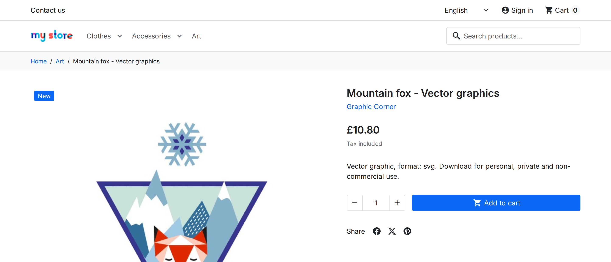
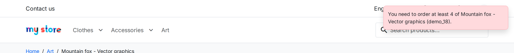
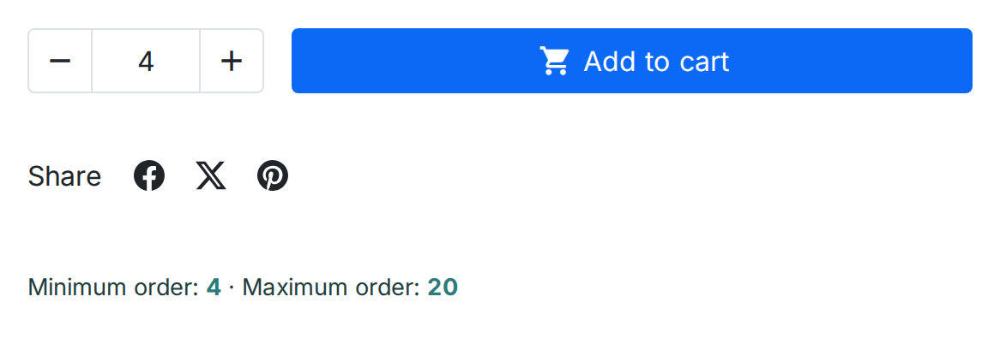

Continuing the example (Minimum Quantity = 4 on "Mountain fox – Vector graphics"), here is the same rule from the shopper's side:

The product page, before the shopper does anything wrong.
The shopper tries to add just 1 unit to the cart. The Minimum Quantity rule blocks the request, and the exact wording configured is shown back to them:

"You need to order at least 4 of Mountain fox - Vector graphics (demo_18).".
With Product page information switched on, the product page states the limits before the shopper tries anything:

The limits stated under the add-to-cart button.
If the cart still breaks a rule — for example the shopper lowered a quantity on the cart page — the cart shows the rule's message, and the Proceed to checkout button stays disabled until the cart is corrected:

The cart page while a rule is broken (PrestaShop 1.7.8 and later).